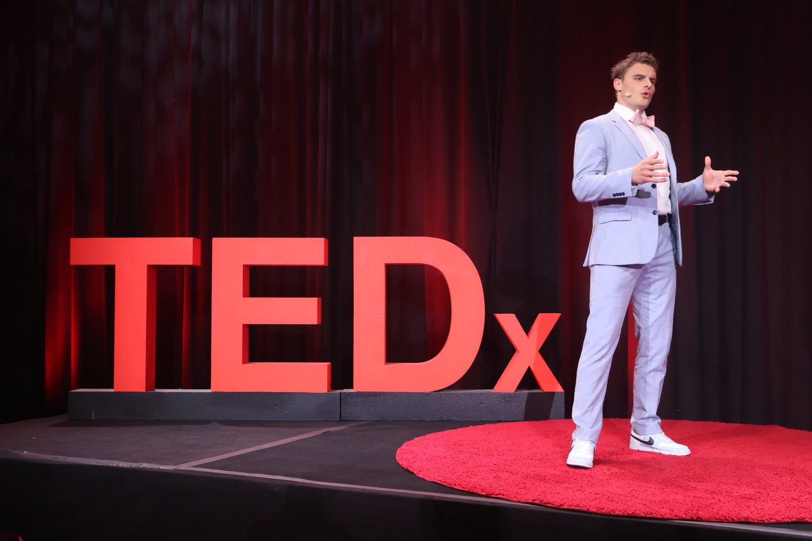
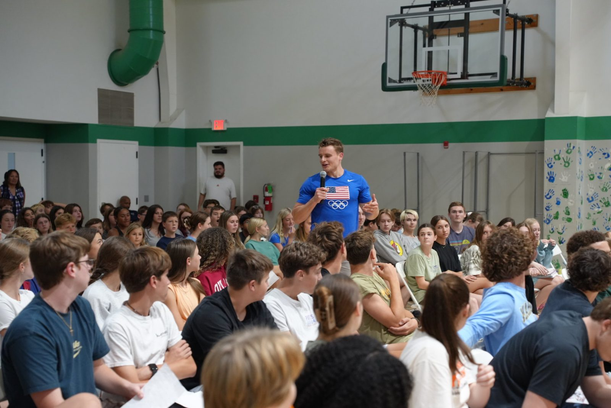
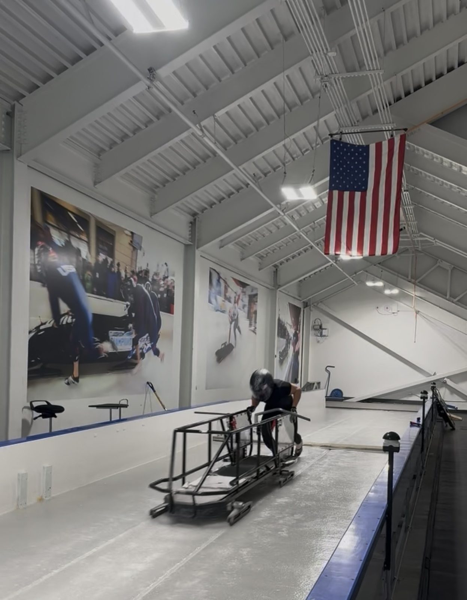
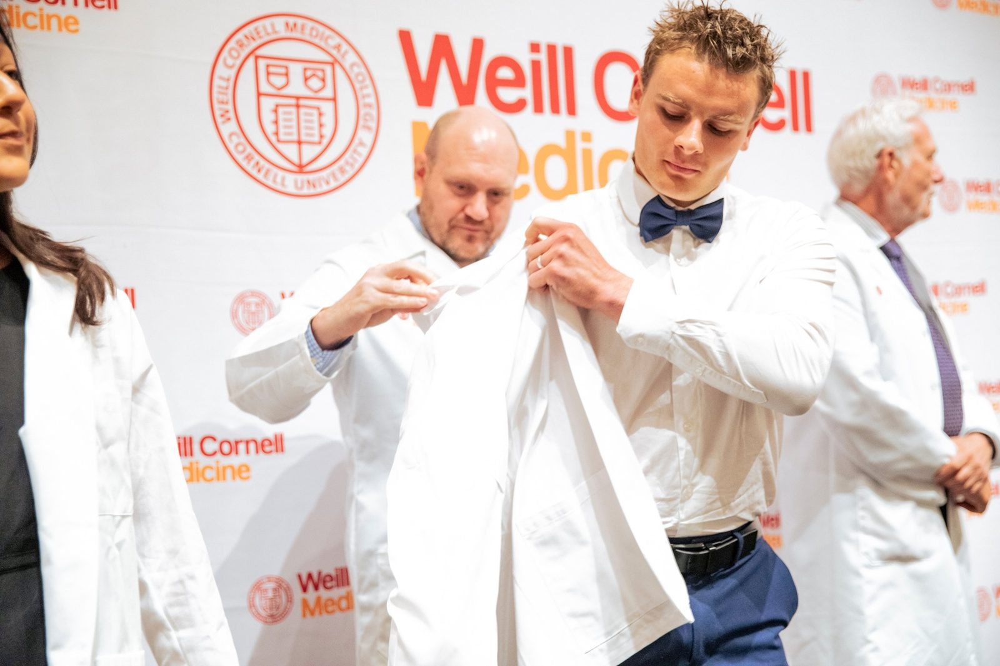
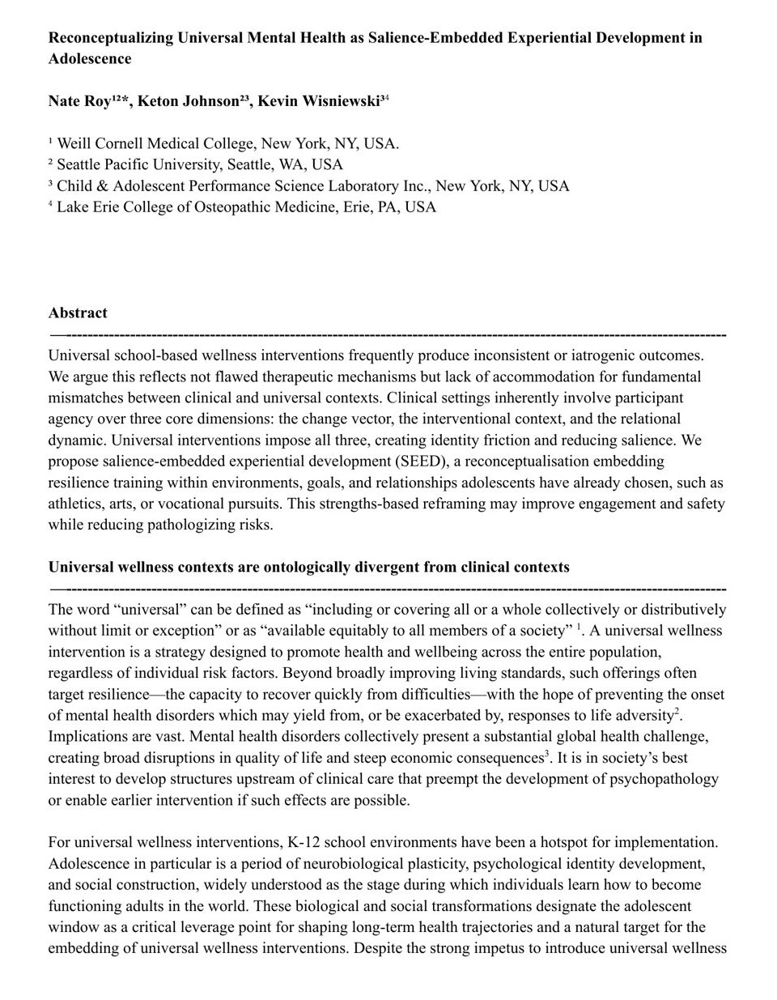

What if the adventure was the intervention?
SEED embeds resilience training inside the goals young people already care about, so the skills stick because they matter.


What we've done so far
SEED is just getting started, and it is already reaching people online and in the room. Hover or tap a bar to see where the numbers come from.
In-person figures are estimates. Online views count the YouTube talk and Instagram.
Nate on stage
Two TEDx talks, and a growing list of rooms. SEED travels best when people can hear it in person.
Nate's first TEDx talk
More than 100,000 views, and the starting point for everything SEED.
Watch on YouTube →What if the adventure was the intervention?
The full SEED idea, in Nate's words. Filmed in September and headed to YouTube soon.


Nate Roy
Nate developed the SEED framework from two places that rarely meet: elite sport and the science of the adolescent brain.
- Athlete with Team USA Bobsled
- Medical student at Weill Cornell, pursuing child and adolescent psychiatry
- Founder of Cortex Flex Inc., mental and physical resilience training for teen athletes
- Co-founder of CAPSuLe, a nonprofit sharing child and adolescent development research with the public
“The brain resists learning that is irrelevant to the adventure in which we find our identity. When learning is embedded in a journey that already matters to a person, acquisition happens by nature.” Nate Roy, from his September 2026 TEDx talk
Plant a SEED in three steps
Instead of adding a mental health program, attach resilience training to a journey a group is already on. Pick a step to watch it grow.
Find the expedition
Discover the goal your group is already chasing, like a faster 40-yard dash for football players or a higher SAT score for test preppers. If nothing unites the group yet, curate an adventure the whole group can take ownership of.
Choose the assets
Decide which mental wellness strengths to embed. The information on these is everywhere. The delivery is what changes.
Plant the SEEDs
Bring the exercises into the thinking, training, planning, preparing, and performing moments kids already care about. That is where brains pick up adversity strategies, reframing techniques, and emotional response patterns that stand-alone mental health programs often fail to teach.
Why most wellness programs miss
School-based wellness programs often produce mixed results, and sometimes cause harm. Our research argues the ideas inside them are not the problem. The way they are delivered is. Hover over a card to compare the clinic with the classroom.
An imposed goal
When the change isn't self-chosen, it can clash with how a young person sees themselves. The brain can reject what doesn't fit who they think they are.
An imposed setting
Learning scales with how meaningful an experience feels. A program with no connection to what a teen cares about often lacks the weight to change anything.
An imposed relationship
A clinician is someone you seek out. A guest facilitator is someone you were handed. Without that voluntary trust, kids disengage or quietly resist.
Where SEEDs grow
The soil is everywhere. Here is where we are planting first.
Athletics
Our first SEED. Teen athletes build habits for handling adversity, regulating emotion, connecting with teammates, and evaluating their own thoughts, inside the sport they love.
Proven groundTest prep
A resilience amplifier built into SAT, ACT, MCAT, and LSAT programs, so students train their mindset alongside their scores.
In developmentAnywhere
Art projects, classroom competitions, workplace challenges, home. If a group shares a goal, there is soil for a SEED.
Scales to any roomBring SEED to your room
Nate speaks at schools, teams, clubs, and conferences about how to plant SEEDs in the groups people already lead.
The research behind SEED
SEED is grounded in clinical and developmental science, and we are putting it up for scrutiny.

Read the full preprint →Reconceptualizing Universal Mental Health as Salience-Embedded Experiential Development in Adolescence
Weill Cornell Medical College · Seattle Pacific University · Child & Adolescent Performance Science Laboratory Inc. · Lake Erie College of Osteopathic Medicine
Universal school-based wellness programs often produce inconsistent results. We argue the cause is a mismatch between clinical and universal settings, not flawed therapeutic methods.
- Clinics give people agency over the change, the context, and the relationship. Universal programs impose all three.
- That creates identity friction and lowers salience, the sense that something matters.
- Embedding resilience training in goals, settings, and relationships adolescents already chose is a strengths-based path that may improve engagement and safety.
Let's plant something together
Coach, teacher, program leader, or researcher: tell us about the adventure your group is already on, or ask about booking Nate to speak.